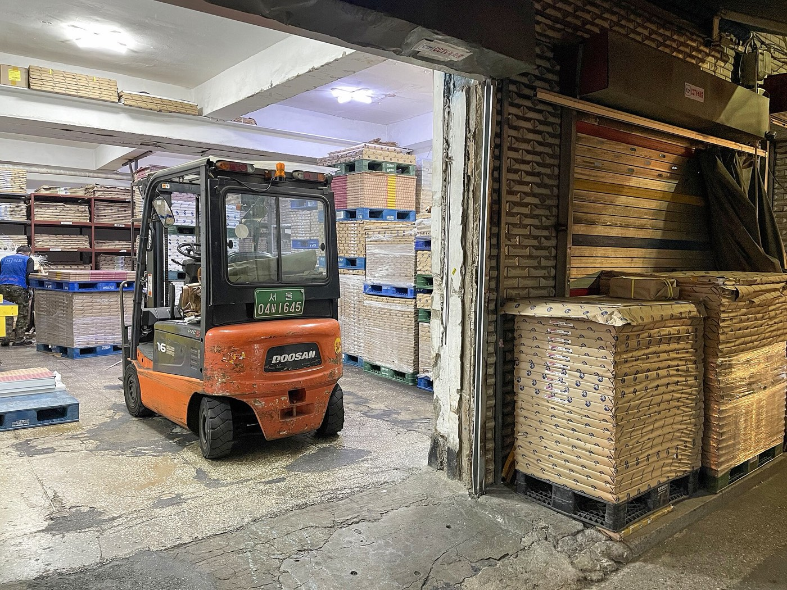
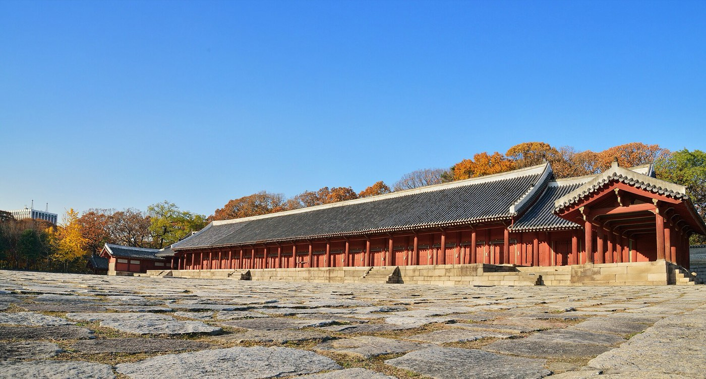
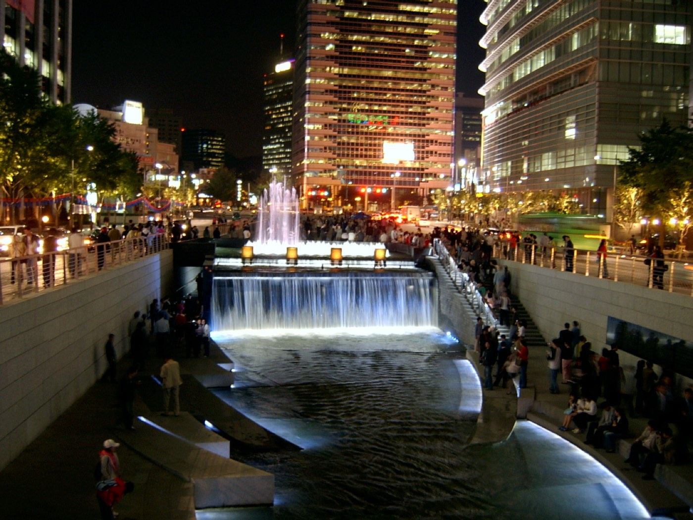
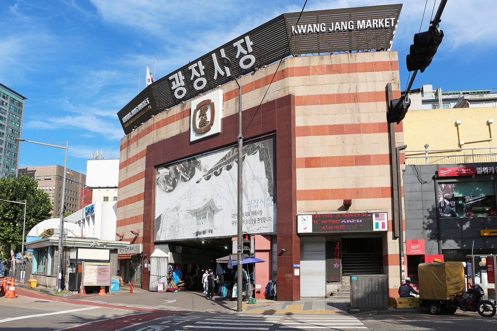

15:00
골목 카페
인쇄소 골목 사이 오래된 건물 2~3층 카페에서 먼저 모여요.
장소 정해지면 업데이트
11월 11일 수요일
3년 만의 모임.
한눈에
시간 되는 만큼 오면 돼요. 저녁만 와도 괜찮아요.
장소

인쇄소 골목 사이 오래된 건물 2~3층 카페에서 먼저 모여요.
장소 정해지면 업데이트


저녁은 을지로 노포에서 오래 앉아 이야기하고, 2차는 을지로3가 노가리 골목 야외 테이블에서 생맥주.
1차 식당 예약 후 업데이트노가리 골목 지도안내